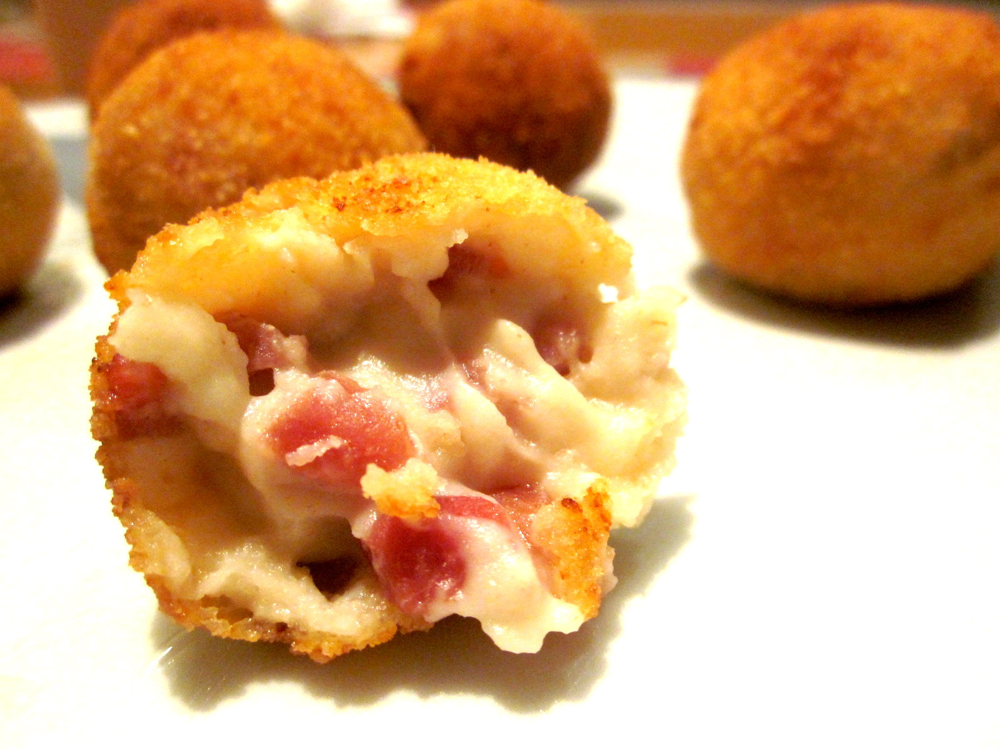

Croquetas de la Abuela con Jamón

Tiempo: aprox. 1 hora
Comensales: 4-6 personas
- Ingredientes:
- 200gr Cebolla picada
- 150gr Jamon cortado en trocitos
- 200gr Harina
- 100gr Mantequilla
- 2 Cucharadas aceite de oliva
- Aceite de girasol o de freir en abundancia
- 750cl Leche semidesnatada
- 2 Huevos
- 250gr Pan rallado
- Sal al gusto
Preparación:
Paso 1
En una cacerola, colocamos la mantequilla, la ponemos a fuego fuerte hasta que se derrita.
Tras esto colocamos las dos cucharadas soperas de aceite de oliva e introducimos la cebolla
picada. Le añadimos un poco de sal y lo dejamos a fuego a medio.
Paso 2
Cuando tengamos la cebolla doradita, introducimos el jamón cortadito en trocitos muy pequeños y le damos vueltas
hasta que lo veamos de color marrón claro que querrá decir que ya está en su punto.
Paso 3
Cuando este el jamón en su punto, introducimos toda la harina y le damos vueltas a toda la mezcla
hasta que nos quede una textura como las migas.
Paso 4
Acto seguido introducimos los 750cl de leche y lo vamos moviendo
en la cacerola, hasta que la masa se nos despegue de la esta.
Paso 5
Una vez se ha despegado de la cacerola, la introducimos en una bandeja, la recubrimos con film transparente
y la dejamos reposar un par de horas.
Paso 6
Después de éste reposo lo introducimos en el congelador (más o menos una hora) y buscaremos el punto de semi
congelación. Pasado éste tiempo, sacaremos la masa de la bandeja y haremos unas bolitas con la masa con lo que
seamos capaces de coger en un puño. Dejamos todas las croquetas formadas con solo masa en un plato.
Paso 7
En otros dos platos colocamos en uno los dos huevos batidos y en el otro plato colocaremos el pan rallado.
Paso 8
Volvemos al plato con la masa de las croquetas formadas y las vamos introduciendo primero por el huevo y luego por
el pan rallado acabando de darle la forma de croqueta.
Paso 9
Cogeremos una paellera, le pondremos aceite de girasol o de freir en abundancia y la dejaremos en el fuego hasta
que esté bien caliente (muy importante que éste el aceite bien caliente).
Paso 10
Con el aceite caliente introducimos las croquetas y las vamos dorando con cuidado ya que se harán muy rápido.
Paso 10
Cuando las croquetas esten doraditas las sacaremos a un plato hondo que le pondremos papel de cocina para
que absorva el aceite sobrante que tengan las croquetas. Tras esto ya estarian listas para servir y disfrutar
de su rico sabor.